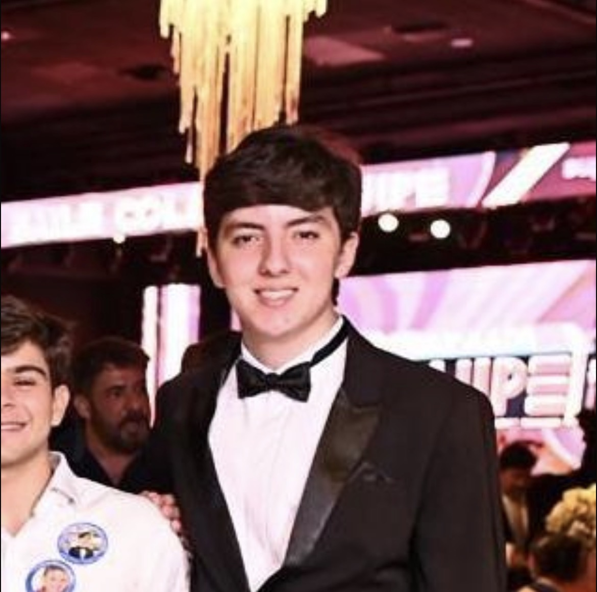

João Pedro Alcoforado
Desenvolvedor Back-end | Estudante de Ciência da computacao na CESAR School

Sobre Mim
Tenho 18 anos e estou no primeiro período de Ciência da Computação na CESAR School. Tenho interesse em desenvolvimento de software, cibersegurança e inteligência artificial, buscando desenvolver soluções e construindo uma base sólida, participando de projetos e aprimorando meus conhecimentos. Atualmente possuo 4 certificações de cursos na CISCO e SENAC.
Tecnologias
Projeto em Destaque
Association Deck
Jogo de cartas adaptado para idosos portadores de demência, no qual o usuário, por meio dos sons transmitidos por cada carta, precisa associá-la a um evento ou objeto do cotidiano. O projeto combina elementos de jogos de mesa com tecnologia RFID/NFC, criando uma experiência que une interação física e processamento digital. Seu desenvolvimento envolveu programação em C++, integração de hardware, leitura de tags RFID e implementação das regras do jogo.
HYROX
Sistema desenvolvido para gerenciamento de treinos de academia, permitindo o cadastro, edição e organização de fichas de treino. O projeto foi criado com foco na praticidade para alunos e profissionais, centralizando informações de exercícios e possibilitando alterações rápidas nas rotinas de treinamento. Seu desenvolvimento envolveu modelagem de dados, lógica de programação e construção de funcionalidades para cadastro, consulta e atualização de treinos.
Contato
Tem alguma oportunidade, projeto ou ideia? Envie uma mensagem.